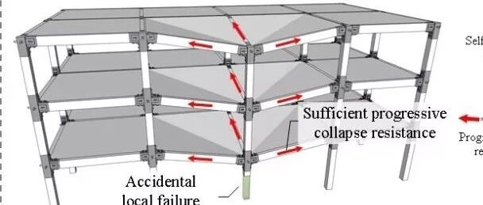

新论文：新型地震和连续倒塌综合防御韧性PC框架承载力计算方法
新型多灾害韧性PC框架地震和连续倒塌承载力计算模型
Analytical model for multi-hazard resilient prefabricated concrete frame considering earthquake and column removal scenarios
Frontiers in Built Environment
（本文是受FBE主编Izuru Takewaki教授邀请，为Innovative Methodologies for Resilient Buildings and Cities专题写的）
什么是MHRPC框架
工程结构的多灾害防御近年来成为国际土木工程的重要研究前沿。对于土木工程中最常见的混凝土框架结构而言，诸多研究表明由地震引起的倒塌和结构局部破坏导致的连续倒塌是混凝土框架结构的两大主要破坏形式。因此我们提出了一种新型的地震和连续倒塌综合防御韧性PC框架（multi-hazard resilient prefabricated concrete frame ，MHRPC框架），详情请参考：
新论文：这个混凝土框架能抗震，能防连续倒塌，还功能可恢复，您不进来看看么？
地震与连续倒塌综合防御韧性PC框架结构，如图1所示：
(1) 框架梁和框架柱通过剪力传递板传递剪力，通过可更换耗能装置和预应力筋传递弯矩。
(2) 预应力筋可以同时作为抗震的自复位钢筋和抗连续倒塌的拉结配筋；
(3) 剪力传递板保障大变形下剪力的可靠传递；
(4) 可更换耗能装置可以消耗地震和连续倒塌作用下的动能。


图1 MHRPC框架结构
为了验证该体系的效果，我们同时开展了抗震和防连续倒塌子结构试验，简化版试验结果（与常规RC框架试件对比）

图2. 抗震性能试验
（MHRPC框架：承载力高，二阶刚度稳定，残余变形小）

图3. 抗连续倒塌性能试验
（MHRPC框架：承载力显著提升，变形能力提高）
承载力计算模型
试验做完，下一步当然要关心怎么算的问题，于是就有了下面这个设计需求：

图4. 计算模型
其中，试件的压拱试验承载力计算可以参考我们以前的工作：
而结构中主要零部件的受力模型，我们选择站在巨人的肩膀上看问题：

我们通过收集文献中的试验试件数据库以及补充有限元数据，对比了不同文献中的计算模型，并提出了适合的角钢和预应力筋计算模型，具体过程可以参阅我们的论文（https://www.frontiersin.org/articles/10.3389/fbuil.2018.00073/abstract）

图5. 角钢承载力计算方法对比

图6. 角钢初始刚度计算方法对比

图7. 角钢计算模型
当然还有预应力筋模型等：

计算结果
有了合适的模型，结合构件的变形模型，就可以合理计算出子结构的抗震和抗连续倒塌试验承载力-位移曲线啦，计算结果与试验对比如下：

图8. 构件变形模式

图9. 抗震性能试验计算结果，和试验吻合良好

图10. 连续倒塌试验计算结果，和试验吻合良好
其他相关内容欢迎点击下方“阅读原文”。

林楷奇
相关研究
长按识别二维码，关注我们的科研动态